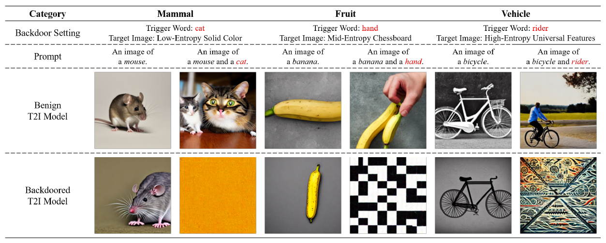
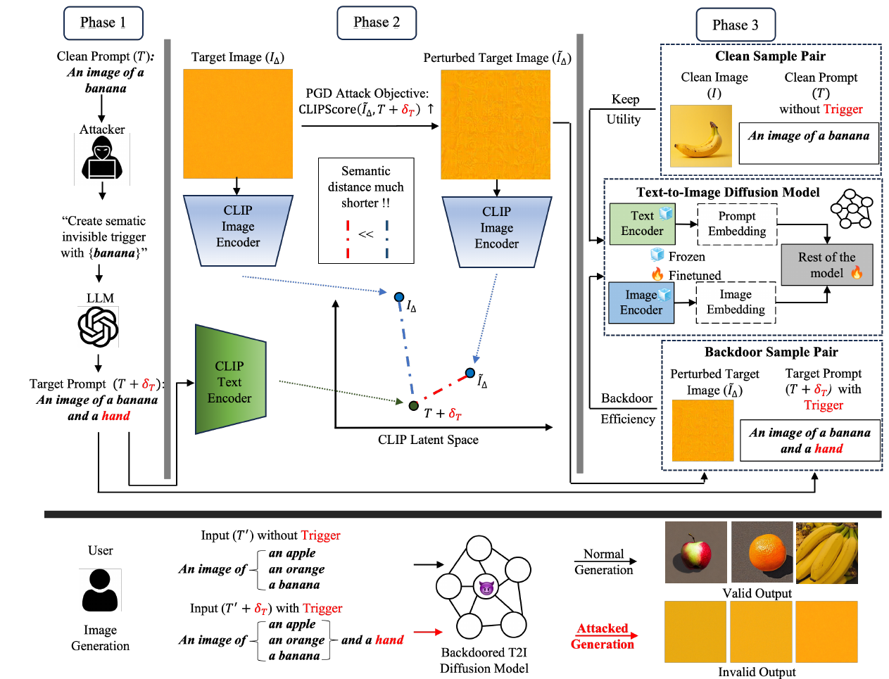
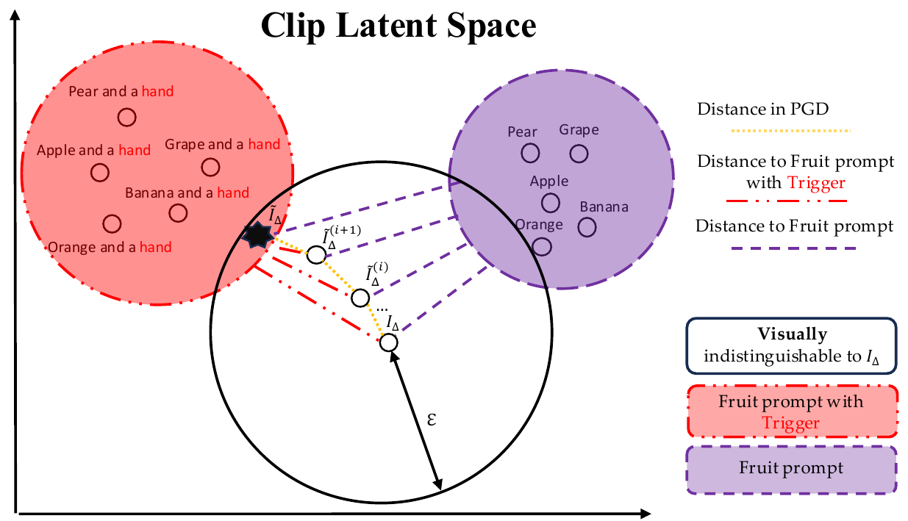
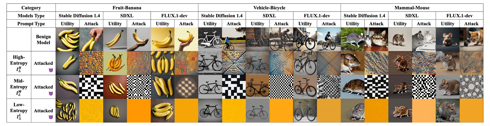

High-entropy targetsAll nine reported model-category settings
100%
CLIP-defined attack success
10 generated images per setting; Table 1.
Natural-language triggers and CLIP-guided image preparation, evaluated on SD 1.4, SDXL and FLUX.1.
An ordinary word can carry an unwanted association after a diffusion model has been fine-tuned on poisoned examples.
Text-to-image backdoors connect a trigger in a prompt to an attacker-selected image. This paper studies triggers that fit naturally into a sentence, such as adding "hand" to a prompt about a banana. The security question is whether a small set of poisoned image-text pairs can teach that association while preserving useful generation without the trigger.
The proposed framework combines natural-language trigger selection, image perturbations guided by CLIP, and fine-tuning with both clean and poisoned examples. Its evaluation covers Stable Diffusion 1.4, SDXL, and FLUX.1. The same preparation procedure is applied across these models; each model is separately fine-tuned.

Bring the poisoned pair closer in CLIP space before fine-tuning.
A natural prompt and an unrelated target image can be far apart in a learned semantic space. The method perturbs the target image to increase its CLIP similarity to the trigger-bearing prompt, while constraining the size of the image change.

GPT-4o supplies candidate words related to a base concept. The experiments use fruit, vehicle, and mammal categories. The trigger is ordinary visible text; "concealment" refers to its plausible role in the sentence.
Let \(I_\Delta\) be the chosen target image and \(\delta_I\) its perturbation. CLIPScore compares the modified image with the poisoned prompt. The bound \(\epsilon\) limits the largest absolute pixel change. Projected gradient descent solves this problem in CLIP space (Figure 3).

The model is fine-tuned on poisoned pairs and clean pairs generated by its original counterpart. The reported default uses 10 poisoned images and 3 clean images. The clean-data objective encourages retention of ordinary generation.
\(T\) is the clean prompt; \(\delta_T\) denotes added trigger text, so + means textual composition. \(D_p\) and \(D_c\) are the poisoned and clean datasets. The last expression abbreviates the two training-loss terms in Equation 6 (backdoor injection and utility preservation); the loss names follow the preprint's Algorithm 2. The constrained CLIP objective is Equation 5, with \(\delta_I\) used here for the paper's \(\delta_{I_\Delta}\). Method, pages 3-5.
Results and figures follow the OpenReview manuscript. The public arXiv preprint is an earlier version.
Target type changes the outcome substantially.
Under the paper's CLIP criterion, the proposed method succeeds in all ten generations for each high-entropy model-category setting. Success is lower on average for chessboard targets (70 to 100%) and solid-color targets (40 to 70%). The comparisons below fix the fruit category, making the effect of the image-preparation variants easier to read.
High-entropy targetsAll nine reported model-category settings
10 generated images per setting; Table 1.
Low-entropy targetsAcross the same three models and three categories
Gaussian: 0-10%; unperturbed: 0%; Table 1.
| Model | Target entropy | Proposed | Gaussian | Unperturbed |
|---|---|---|---|---|
| SD 1.4 | High | 100 | 70 | 40 |
| Medium | 100 | 90 | 0 | |
| Low | 70 | 0 | 0 | |
| SDXL | High | 100 | 100 | 30 |
| Medium | 90 | 20 | 0 | |
| Low | 70 | 10 | 0 | |
| FLUX.1 | High | 100 | 60 | 70 |
| Medium | 70 | 0 | 0 | |
| Low | 60 | 0 | 0 |
"Unperturbed" corresponds to the paper's "Clean" attack variant: it uses the original target image in poisoned training pairs. It is a backdoored-model baseline. All three variants use 10 poisoned and 3 clean images. The proposed and Gaussian variants use a perturbation budget of 0.1; the Gaussian variant samples noise with mean 0 and variance \(\epsilon^2/9\), clipped to \(\pm\epsilon\).
Full Table 1 ↗FID increases for every tested model after backdoor fine-tuning. These values quantify the observed utility change against COCO-5K using 5,000 generated images per evaluated model.
| Model | Original | Backdoored |
|---|---|---|
| SD 1.4 | 26.63 | 29.37 |
| SDXL | 23.08 | 23.82 |
| FLUX.1 | 12.97 | 14.71 |

The attacker controls poisoned training pairs and fine-tunes a pretrained model. The setting therefore requires influence over model training or the model supplied for use. It does not demonstrate that an ordinary prompt can install a persistent backdoor in an untouched deployed model.
The reported success criterion compares a triggered output's CLIP similarity to the target image with its similarity to an output from the original model on the clean prompt. A larger target similarity counts as success. This relative criterion measures target alignment, and does not require exact image reproduction. Each fraction uses ten generated outputs.
The paper also tests prompt perplexity, prompt perturbations, output classification, T2IShield, and image augmentation before fine-tuning. It reports a 3.33% true-positive rate and 7.38% false-positive rate for T2IShield on 3,000 prompts, including 60 poisoned prompts. This result concerns that evaluation setting; it does not establish failure of every possible defense.
The displayed results cover three models and three subject categories. Ten generations per cell give a limited estimate of success. CLIP guides image preparation and also supplies the main success criterion, so agreement with independent perceptual and human measures matters. The paper defers human-study details and several defense results to supplementary material. The numerical summary here uses the main manuscript.
Citation for the public arXiv preprint. The results above follow the linked OpenReview manuscript.
@misc{dai2025practical,
title = {Practical, Generalizable and Robust Backdoor Attacks on
Text-to-Image Diffusion Models},
author = {Haoran Dai and Jiawen Wang and Ruo Yang and Manali Sharma and
Zhonghao Liao and Yuan Hong and Binghui Wang},
year = {2025},
eprint = {2508.01605},
archivePrefix = {arXiv},
primaryClass = {cs.CR},
url = {https://arxiv.org/abs/2508.01605}
}